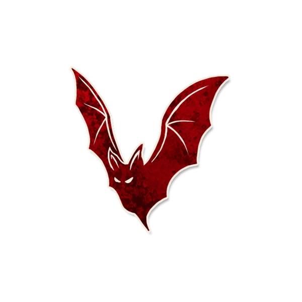

背景故事
“你好好，你坏坏。”
角色能力
每个夜晚，你要选择两名玩家：其中的非恶魔玩家会被当作与他原本阵营相反的阵营，直到下个黄昏。
角色简介
夜影扭曲镇民的认知。
- 每个夜晚，夜影会选择两名玩家，他们在当晚的剩余时间和接下来的一整个白天阶段里，会被角色能力当作其自身阵营的对立阵营。即原本是善良的角色会被当作邪恶的，原本是邪恶的角色会被当作善良的。
- 夜影可以选择恶魔。但即使如此，夜影的能力也不会让恶魔被当作其对立的阵营。
范例
超哥是夜影，尧尧是普卡，小赵是共情者，轩哥是刺客，他们依次相邻而坐。当晚，超哥选择了尧尧和轩哥。小赵被唤醒并得知了“1”。
摸鱼是夜影，寒水是村夫，六哥是博学者。夜晚，摸鱼选择了六哥和自己。寒水选择了六哥并得知了“邪恶”。
运作方式
- 每个夜晚，唤醒夜影。让投毒者指向任意两名玩家。将“阵营干扰”提示标记放置在被选择的非恶魔玩家角色标记旁。让夜影重新入睡。
- 直到下个黄昏，如果有任何玩家的能力检测到放置了“阵营干扰”提示标记的玩家的阵营，需要将他当作与其本身相反的阵营进行结算。每到黄昏时，移除阵营干扰的提示标记。
提示标记
- 阵营干扰
- 放置时机：在夜影夜晚行动并选择了玩家后。
- 放置条件：在夜影选择的玩家角色标记旁放置。若此时夜影醉酒中毒，不放置该标记。如果夜影选择的玩家是恶魔，则不要放置。
- 移除时机：白天阶段结束时。
规则细节
与特定角色互动
- 赏金猎人：如果赏金猎人即将在当晚得知新的角色，而夜影选择了（至少）一名善良玩家，那么说书人可以让赏金猎人得知被夜影能力选择的那名玩家。
- 陌客：如果陌客被夜影选择了，他既可以被其他角色的能力当作善良阵营也可以被当作邪恶阵营——这和他本身的能力并没有显著的分别。
- 食人魔：如果夜影和食人魔在首个夜晚选择了同一名玩家，食人魔实际上会转变为同其选择目标相反的阵营，但他仍然不知道。
- 金匠：如果夜影使用能力选择了自己，那么金匠的能力将无法检测到夜影所选择的角色，因为夜影此时被当作“善良的”。
相克规则
Json字段
图标画师
Lei.